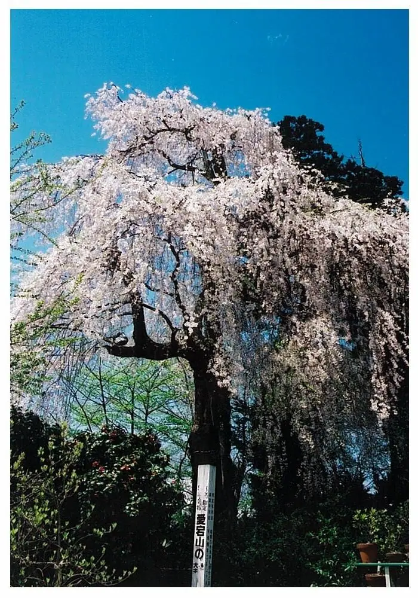
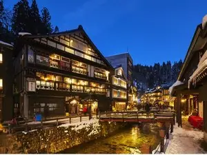
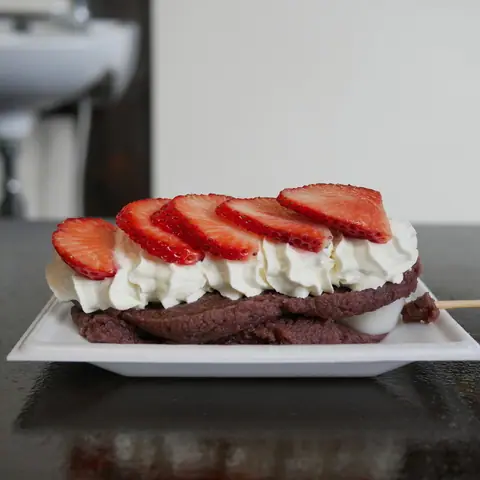
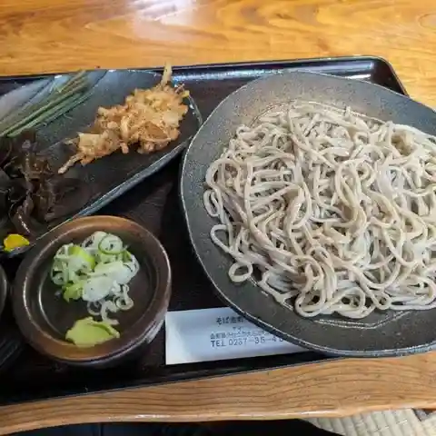
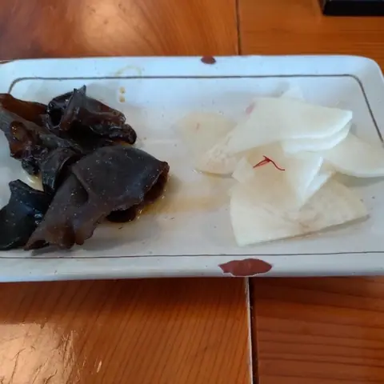
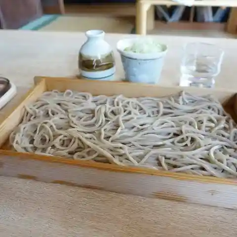
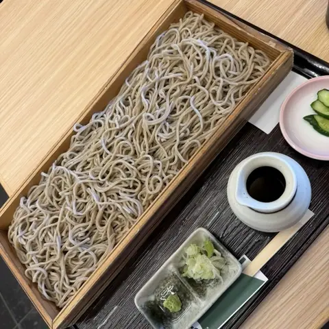
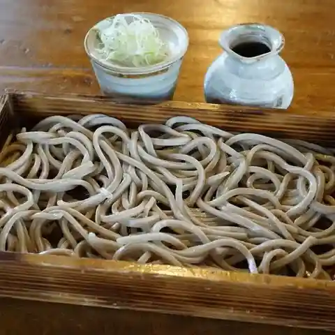
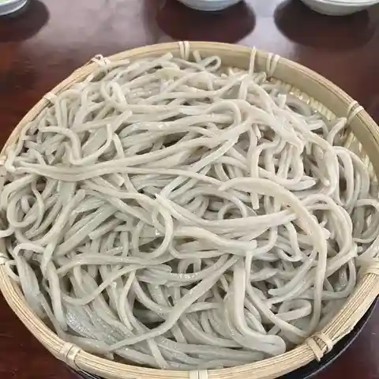

Oishida
Oishida · Yamagata
Oishida
Highlighted on the Yamagata map.

Stay
最上屋旅館

Saijou Ya Ryokan
Ryokan inn in Oishida, Yamagata.
Dining
横丁とうふ店 最上川千本だんご

Yokochou Toufu Mise Saijou Kawasen Hon Dango
Japanese sweets shop in Oishida, Yamagata.
そば座敷 平吉

Soba Zashiki Heikichi
Soba restaurant in Oishida, Yamagata.
七兵衛そば
Shichibyoue Soba
Soba restaurant in Oishida, Yamagata.
蕎麦屋 まんきち

Sobaya Mankichi
Soba restaurant in Oishida, Yamagata.
そば切り源四郎

Soba Kiri Genshirou
Soba restaurant in Oishida, Yamagata.
そば処 ふうりゅう

Soba Tokoro Fuuryuu
Soba restaurant in Oishida, Yamagata.
蕎麦処 若佐

Sobadokoro Wakasa
Soba restaurant in Oishida, Yamagata.
そば吉峰

Soba Yoshimine
Soba restaurant in Oishida, Yamagata.
来迎寺そばや 作兵衛
Raigou Tera Sobaya Sakubee
Soba restaurant in Oishida, Yamagata.
おそば美登利
Osoba Midori
Soba restaurant in Oishida, Yamagata.
来迎寺在来手打ちそば 清水柳
Raigou Tera Zairai Teuchi Chisoba Shimizu Yanagi
Soba restaurant in Oishida, Yamagata.
ぱんどら 大石田店
Pandora Ooishida Mise
Cake shop in Oishida, Yamagata.
手打ち次年子そば
Teuchi Chi Tsugi Toshigo Soba
Soba restaurant in Oishida, Yamagata.
アンドメルシィ クラ オオイシダ 大石田店
Andomerushii Kura Ooishida Ooishida Mise
Cake shop in Oishida, Yamagata.
お食事処 さくら
O Shokuji Tokoro Sakura
Shokudo diner in Oishida, Yamagata.
調香菜 Umui
Choukou Na Umui
Vegetable-dish restaurant in Oishida, Yamagata.
ラーメン長作
Raamen Chousaku
Ramen shop in Oishida, Yamagata.
トトロ喫茶
Totoro Kissa
Coffee shop in Oishida, Yamagata.
田舎カフェレストラン めもりい
Inaka Kaferesutoran Memorii
Café in Oishida, Yamagata.
たいやきや銀の龍
Taiyakiya Gin No Ryuu
Taiyaki shop in Oishida, Yamagata.
べにば奈
Beniba Na
Ramen shop in Oishida, Yamagata.
鮨けん
Sushi Ken
Sushi restaurant in Oishida, Yamagata.
米粉パンのお店 あおいそら
Beifun Pan Noo Mise Aoisora
Bakery in Oishida, Yamagata.